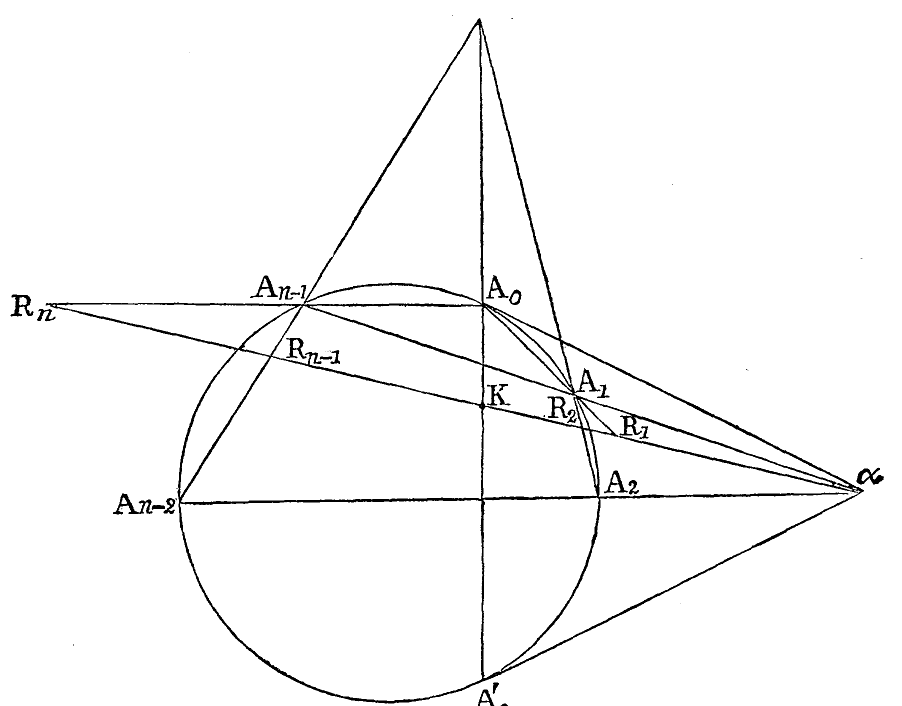

Supplementary Chapter, Section VI: Theory of Harmonic Polygons¶
John Casey — Supplementary Chapter on the Recent Elementary Geometry of the Triangle (5th ed., 1888, pp. 205–222)
f. 0231 · p. 205
SECTION VI.¶
THEORY OF HARMONIC POLYGONS.¶
Definition (f. ``0231``, Casey 1886). A cyclic $n$-gon $A_0 A_1 A_2 \dots A_{n-1}$ inscribed in a circle $(O)$ is called a Harmonic Polygon when there exists a point $K$ in its plane—its Symmedian Point—whose perpendicular distances to the $n$ sides are directly proportional to the lengths of those sides (equivalently, when the polygon is the circular-inversion or projective-harmonic image of a regular $n$-gon!). Every triangle is harmonic ($n = 3$); for $n = 4$, a cyclic quadrilateral $ABCD$ is harmonic iff the products of opposite sides are equal ($AB \cdot CD = BC \cdot DA$).
f. 0236 · p. 210
Symmedian Chords, Involution & Polar of $K$ (Props. 4–5, f. ``0236``).
Cor.—The vertices $A_1 A_{n-1}, A_2 A_{n-2}, \text{&c.}$, form a system of points in involution, and points $A_0, A_0'$ are the double points. Hence the vertices of a harmonic polygon form as many systems in involution as it has symmedian lines.
Section VI, Proposition 5 (Harmonic Mean Locus of the Polar of $K$). If a transversal through the symmedian point $K$ cuts the sides of the polygon in the points $R_1, R_2, \dots, R_n$, and if a point $P$ be taken on it so that
$$ \frac{1}{KR_1} + \frac{1}{KR_2} + \dots + \frac{1}{KR_n} = \frac{n}{KP}, $$
the locus of $P$ is the polar of $K$ with respect to the circumcircle.
Dem.—Let $\alpha$ be the pole of the symmedian chord $A_0 A_0'$. Join $K\alpha$. It is easy to see that $\alpha$ is one position of $P$. For if $n$ be even, the sides may be distributed in pairs, so that the points $K, \alpha$ are harmonic conjugates to the points in which each pair of sides may be cut by the line $K\alpha$. Hence $\frac{1}{KR_1} + \frac{1}{KR_n} = \frac{2}{K\alpha}$, etc.


f. 0245 · p. 219
Generalized Brocard & Lemoine Circles for Harmonic Polygons (ff. ``0237–0248``). Extending Sections I–III to $n$-gons, Casey proves that every harmonic $n$-gon possesses two Brocard Points $\Omega, \Omega'$ (on equal Brocard angle $\omega$), a Brocard Circle on $[OK]$, a Lemoine First Circle whose chords are proportional to the cubes of the $n$ sides, and an associated Cosine Circle centered at $K$!